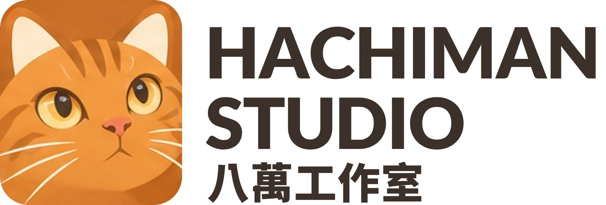
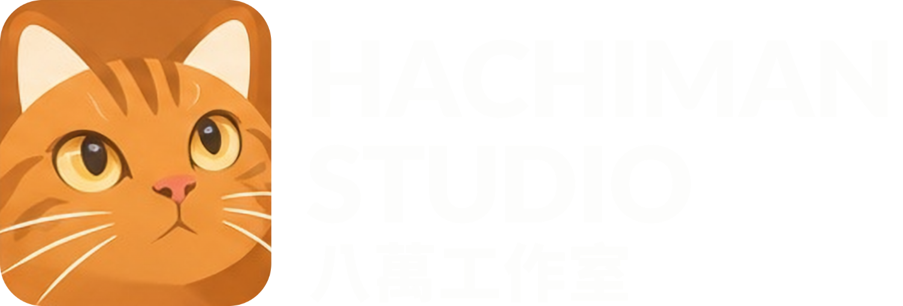
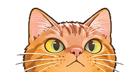

題目已確認
2026-11-12 確認維持。前提是論文要包含情境變動偵測及其評估。
已確認

論文研究進度2026-11-12 確認維持。前提是論文要包含情境變動偵測及其評估。
已確認從遺忘出發：記憶不是被刪除，而是在不對的情境中不該被取用。
已確認四類場景、2–60 人、中英雙語；還沒開始生成資料。
進行中先讀 3 篇定位論文，下週面談。
本週
八萬發現了最大的風險
只看文字時，判斷「換人了沒」和「是誰」接近隨機（見關鍵數據）。如果偵測做不起來，改用備用題目《無情境標註之持續互動中智能體的選擇性記憶利用》。
同一個代理、同一份記憶，在連續的文字互動中服務不同的人和場景，而且沒有身分標籤、場景標籤或對話分段。「世界線」只是第一章的比喻，指「人 × 場景」構成的互動情境。
互動情境什麼時候換了。
換到哪個情境：是之前出現過的人或場景，還是新的。
用自己的記憶、避開別人的記憶、轉用可以遷移的記憶。
情境不明時先追問，不直接套用記憶。
和既有研究的差異：只用文字、沒有身分或場景標籤、要長期認出回來的人，並且連到記憶使用的決策。SpeakerBind、EvoSpeakerMem、VoxPolyMem 靠聲紋，Bio-Memory 靠人臉或掌紋；MixUA 和 ShareMem 的使用者身分是已知的。
本 repo 自己跑的診斷。都沒有呼叫語言模型，只用 TF-IDF 或嵌入向量相似度，代表「只看文字內容」的下限。
| 資料 | 測什麼 | 結果 | 隨機猜 |
|---|---|---|---|
| Memora 混合（2 人） | 換人偵測 AUC／認回舊人（整段） | ≈0.50／58% | 0.50／50% |
| Memora 混合（5 人） | 同上 | ≈0.47／29% | 0.50／20% |
| Memora 混合（10 人） | 同上 | ≈0.46／18% | 0.50／10% |
| GroupMemBench（6 位作者） | 作者歸屬（中心點） | 55.8–58.2% | 16.7% |
| GroupMemBench（18 位作者） | 作者歸屬（中心點） | 55.6–57.2% | 5.6% |
| GroupMemBench 區塊 | 最近的前一個區塊是同一人／同一頻道 | 34.5%、26.2%／98–99% | — |
| STALE × FadeMem 參數 | 全域衰退後，提問時取得新證據的比例 | 65.1% → 6.3% | — |
解讀：場景（頻道）幾乎一看就分得出來，難的是「人」這一軸。Memora 的對話內容幾乎不帶個人線索，不適合當主要資料；GroupMemBench 有可用的作者訊號，適合用來開發 C1／C2。
| 項目 | 決定 |
|---|---|
| 題目 | 維持；「世界線」只當第一章的比喻 |
| 研究定位 | 情境依存的記憶抑制；FadeMem／Pragma 當作「記憶強度 ≠ 情境適用性」的對照組 |
| 本機模型 | 只是實驗的執行方式，不當作貢獻或特色 |
| 隱私 | 不在研究範圍內 |
| 引用 | 新穎性查核與相關研究要納入預印本；支撐論點的事實優先引用同儕審查文獻 |
| 事實會不會變 | 主實驗不變；「依情境過時」列為延伸 |
| 題目寫回記憶 | 不寫回 |
| 身分線索 | 中級為主，弱級當壓力測試；強級另做有名字／沒名字的對照 |
| 使用記憶的示範 | 保留，比例上限 15%，另做拿掉示範的消融 |
家庭事務、開放場域多功能工作（代理像在那裡工作的員工，有固定同事也有來往的人）、班級課程、公司多人秘書
GroupMemBench 改編（開發 C1／C2）＋自建（主實驗）；對話一律用本機模型生成
每個案例 2–60 人；人工抽查 10 案例 × 10 題
英文為原始語言；中文由研究者用訂閱的閉源模型全部翻譯
| 題型 | 測什麼 | 正確行為 |
|---|---|---|
| Q1 | 自己在這個情境的記憶 | 使用 |
| Q2 | 同一個人、另一個場景 | 只用屬於「人」的記憶 |
| Q3 | 同一個場景、另一個人 | 只用屬於「場景」的記憶 |
| Q4 | 可遷移的記憶 | 轉用 |
| Q5 | 陷阱：別人有類似的記憶 | 避開 |
| Q6 | 情境不明 | 先確認 |
| Q7 | 自己沒有相關資料 | 不答或先確認 |
實驗條件：給標籤／只給邊界／什麼都不給（主要）。指標：邊界 F1／AUC、歸屬 B³ F1、切碎與汙染、誤用／漏用／遷移、確認行為。
假設平日每天約 2–3 小時。第一級論文每篇抓一天，讀完在 READING_LIST.md 的「讀後」欄寫一句自己的判斷。勾選只存在你這台裝置的瀏覽器裡。
| 日期 | 工作 | 產出 | 完成 |
|---|
面談要約在讀完 1、2、7 之後：這樣被問到「和 SpeakerBind、MixUA 差在哪」時，你能用自己的話回答。如果老師只有本週有空，就先去，用本頁的「關鍵數據」和「研究問題」說明即可。
老師您好： 距離上次和您討論已經一個月，這段期間研究方向有比較大的調整，想跟您約時間報告並請教意見。 簡要進展： 1. 原本的記憶遺忘方向，我實際跑了診斷，也查核了相關文獻，發現遺忘機制在現有 benchmark 上幾乎量不出對答題的影響，評估本身是瓶頸。 2. 因此把題目調整為《情境未標註下智能體的情境變動偵測與選擇性記憶利用》：同一個智能體在沒有身分或場景標籤的連續互動中服務多人、多場景，需要判斷情境是否改變，並依情境決定哪些記憶該用、哪些該抑制。這延續了原本遺忘的問題，只是改成「依情境抑制」，而不是「隨時間衰退」。 3. 已完成文獻查核、可行性診斷，以及自建 benchmark 的規格草案。 想請教的事主要有：新方向與題目是否合適、自建 benchmark 是否可作為貢獻之一，以及引用預印本的原則。 不知道老師下週（11/19 或 11/20）是否方便？若這兩天不行，也請老師告訴我方便的時段，我配合調整。報告約 10 分鐘，討論視老師時間而定。 謝謝老師。 學生 敬上
所有文件都在 repo 的 docs/ 資料夾。
| 文件 | 內容 |
|---|